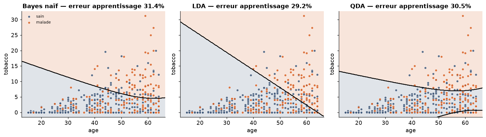
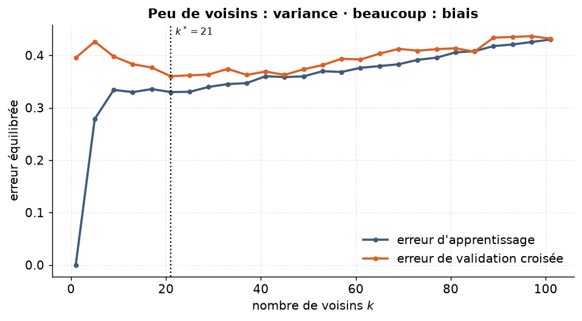
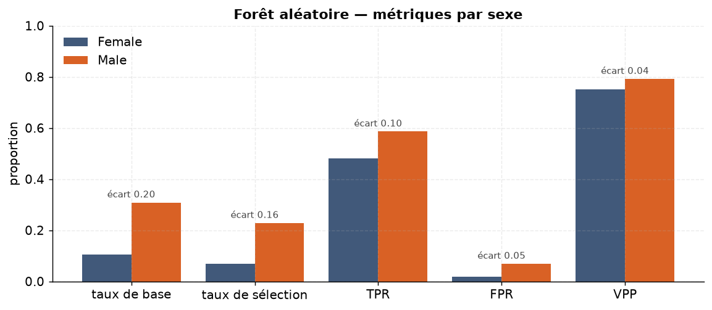
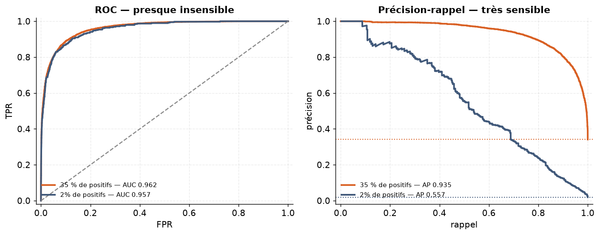
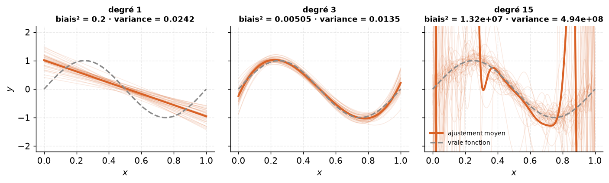
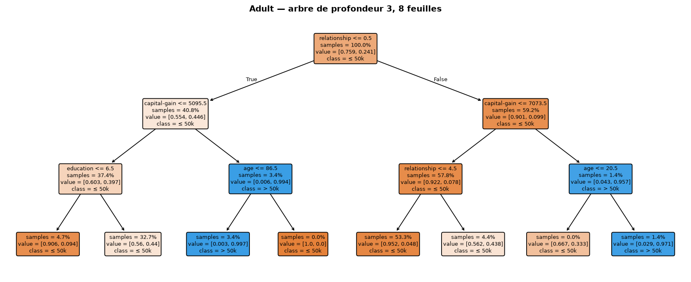

Machine learning · MSc Data Science, Université Paris-Saclay
Supervised Machine Learning
A complete supervised-learning study on two real datasets, from the theory of the Bayes classifier
to ensemble methods, algorithmic fairness and model evaluation, in Python with scikit-learn.
+3.4 ptsBalanced accuracy of k-NN on SAheart after standardising the features: 0.599 → 0.633 (5-fold stratified CV).
k* = 21Number of neighbours chosen by cross-validation, balancing variance (small k) against bias (large k).
22.8% vs 6.8%Selection rate of a random forest on Adult for men vs women: the model amplifies the gap already present in the data.
The data
Two real-world classification problems
❤️
SAheart · 462 × 10
Coronary heart disease among men in a high-risk region of the Western Cape, South Africa. Target: chd.
💼
Adult · 10,000 × 13
Extract of the 1994 US census (UCI). Target: income above $50k, used for trees, ensembles and fairness.
🧪
Synthetic data
Controlled simulations to illustrate overfitting, bias-variance and the curse of dimensionality.
Highlights
Selected figures

Decision boundaries on SAheart (age × tobacco). Naive Bayes, LDA and QDA draw different frontiers between healthy and sick patients; LDA reaches the lowest training error (29.2%).

Choosing k for k-NN. Few neighbours mean high variance, many neighbours mean high bias; cross-validation picks k* = 21.

Algorithmic fairness. Base rate, selection rate, TPR, FPR and precision by sex for a random forest on Adult.

ROC vs precision-recall. With 2% positives, the ROC AUC barely moves (0.962 → 0.957) while average precision collapses (0.935 → 0.557): on imbalanced data, precision-recall tells the real story.

Bias-variance trade-off. Degree 1 underfits, degree 15 explodes in variance, degree 3 gets it right.

Interpretable CART tree on Adult. A depth-3 tree with 8 leaves: relationship status and capital gain drive income.
Figures are taken from the original notebook, whose labels are in French.
Curriculum
What the study covers
#
Chapter
Concepts
1
Bayes rule & asymmetric costs
Bayes classifier, decision threshold when errors have different costs
Bagging, out-of-bag error, random forests (mtry), boosting
9
Algorithmic fairness
Group metrics, fairness-accuracy trade-off, impossibility theorem
10–11
Validation & evaluation
Temporal splits, confusion matrix, threshold metrics, ROC and precision-recall
Code
A taste of the pipeline
from sklearn.model_selection import StratifiedKFold, cross_val_score
from sklearn.neighbors import KNeighborsClassifier
from sklearn.pipeline import make_pipeline
from sklearn.preprocessing import StandardScaler
X, y = utils.saheart_xy()
cv =StratifiedKFold(n_splits=5, shuffle=True, random_state=42)
raw =KNeighborsClassifier(n_neighbors=15)
scaled =make_pipeline(StandardScaler(), KNeighborsClassifier(n_neighbors=15))
for name, model in [("raw", raw), ("standardised", scaled)]:
s =cross_val_score(model, X, y, cv=cv, scoring="balanced_accuracy")
print(name, round(s.mean(), 3)) # raw 0.599 · standardised 0.633